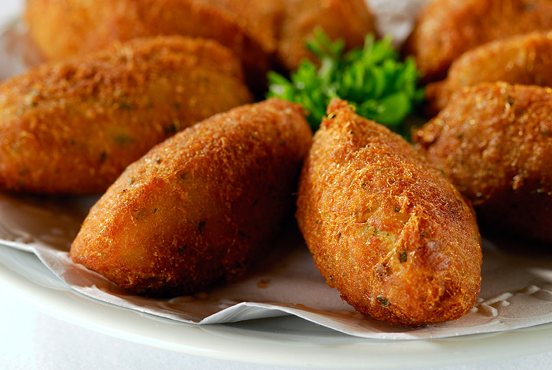

As Nossas Entradas

Bruschetta Italiana
Pão italiano torrado com tomates frescos, manjericão e azeite extra virgem.
15 min
4 porções

Pastéis de Bacalhau
Crocantes por fora e macios por dentro, os tradicionais pastéis de bacalhau portugueses.
40 min
6 porções

Paté de Atum
Um paté cremoso e saboroso, perfeito para acompanhar com pão ou tostas.
15 min
4 porções